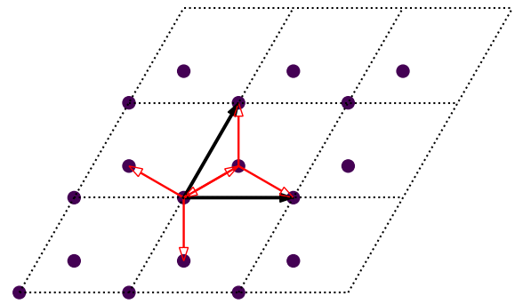
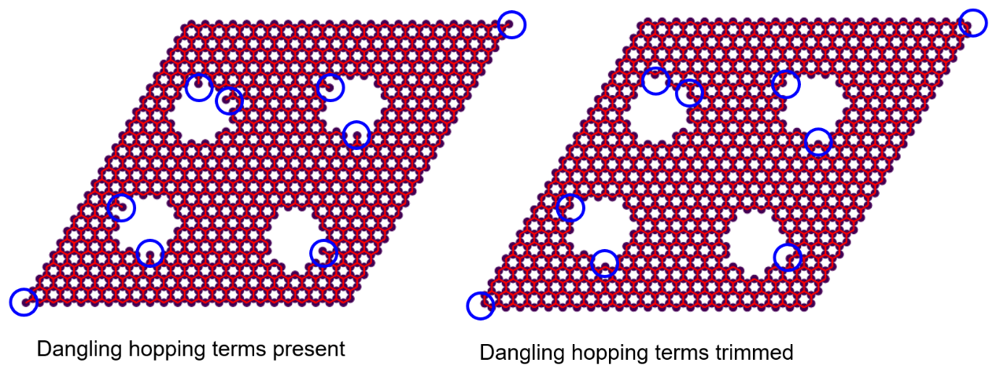
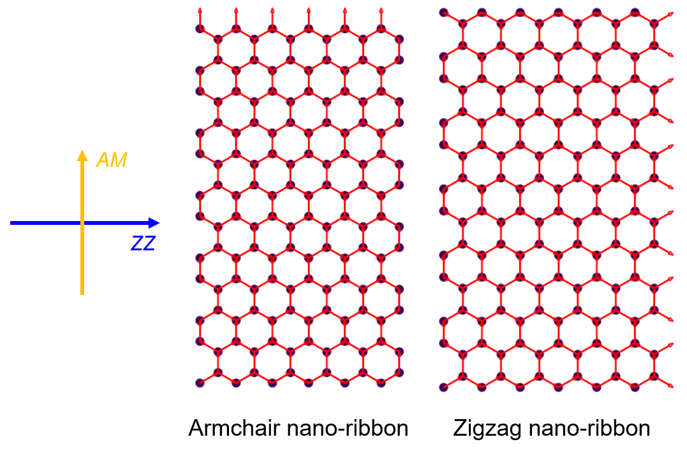
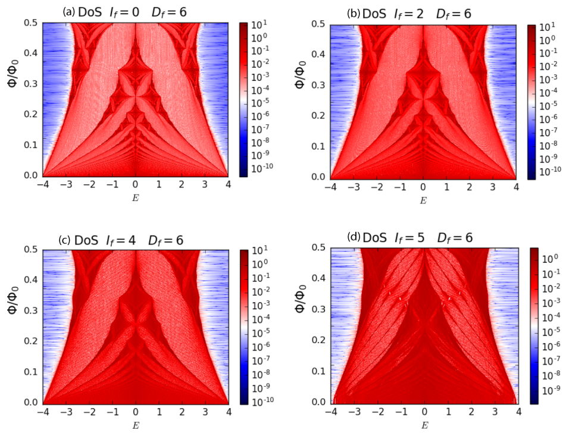
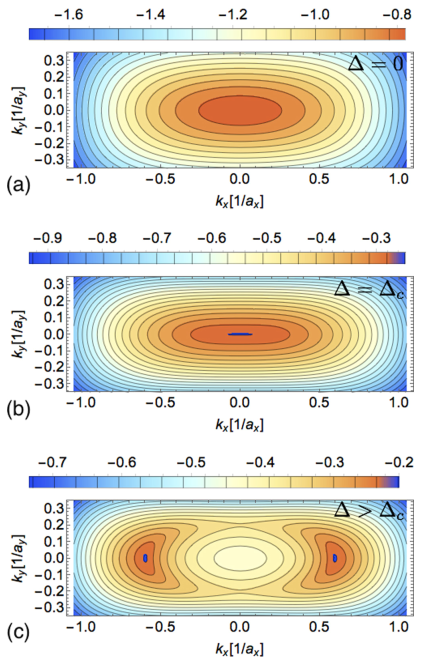
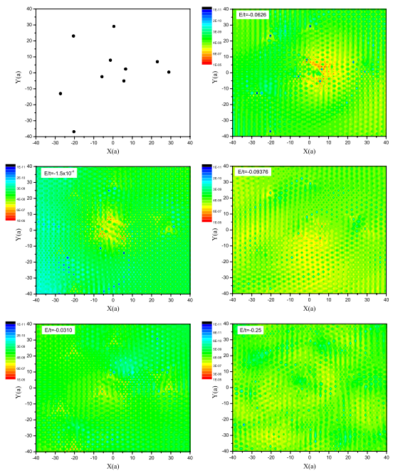

About¶
Features¶
The main features of TBPlaS include:
- Capabilities
- Modeling
- Models with arbitrary shape and boundary conditions
Impurities and disorders
Hetero-structures, quasicrystal, fractals
2D and 3D structures
- Exact-diagonalization
Band structure, density of states (DOS), wave functions, Lindhard functions
- Tight-binding propagation method
DOS and local DOS
AC and DC conductivity
Polarizability and dielectric function
Quasi-eigenstates
- Kernel polynomial method
DC and Hall Conductivity
- Fields and strains
Homogeneous magnetic field via Peierls substitution
User-defined electric field and strain
- Efficiency
FORTRAN and Cython (C-Extensions for Python) for performance-critical parts
Hybrid parallelism based on MPI and OpenMP
- Sparse matrices for reducing memory cost
Interfaced to Intel MKL (Math Kernel Library)
Lazy-evaluation techniques to reduce unnecessary operations
- Easiness
- For users
Intuitive user APIs (Application Programming Interface) and simple workflow
- Built-in materials database
Graphene, phosphorene, antimonene, TMDC
Twisted structures can also be built and modified using built-in materials
Interfaced to Wannier90 and LAMMPS
- For developers
Transparent code architecture with detailed documentation
- Security
Automatic detection of illegal input
Data inconsistency prevented via locking mechanism
Carefully designed exception handling with precise error message
Gallery¶
Modeling¶
Primitive cell of monolayer graphene. Orbitals and hopping terms are shown as filled circles and red arrows, respectively. Dashed lines indicate primitive cell borders with lattice vectors highlighted as black arrows.

Graphene sample with 50*50 primitive cells. Cell borders and orbitals have been hided for clarity.
Graphene sample with vacancies. Dangling hopping terms indicated by blue circles are present in left panel and trimmed in right panel.

Graphene sample with deformation of Gaussian bump.
Graphene nano-ribbon with armchair and zigzag edges.

Top and side views of twisted bilayer graphene without and with inter-layer hopping terms.

Sierpinski carpet generated with S=2, N=3, L=3.
Properties¶

Band structure and density of states of monolayer graphene primitive cell via exact-diagonalization.

Band structures of armchair and zigzag graphene nano-ribbons via exact-diagonalization.
Hofstadter butterflies (density of states as function of magnetic field) for Sierpinski carpet with different iteration numbers. Phys. Rev. B 101, 045413 (2020).

Spatial distribution of plasmon eigenmodes in real space. Phys. Rev. B 97, 205434 (2018).
Constant energy contours of biased bilayer BP under different bias potential. Phys. Rev. B 93, 245433 (2016).

Landau level spectrum of ABA- and ABC-stacked tri-layer graphene. Phys. Rev. B 84, 125455 (2011).

Electronic energy loss function (EELS) for monolayer antimonene with different chemical potential. Phys. Rev. B 98, 155411 (2018).
Quasi-eigenstates of monolayer graphene with hydrogen impurities. Phys. Rev. B 82, 115448 (2010).

Stable interference pattern for a wave packet incident on a Gaussian potential. Phys. Rev. B 91, 045420 (2015).
Citation¶
Please cite the follow reference when using results from TBPlaS:
Van Veen, G. Slotman, K. Huang, Y. Li, X. Kuang, S. Yuan, “TBPlaS: a tight-binding propagation simulator” [under preparation]
License¶
TBPlaS is release under the BSE license 2.0, the complete content of which is as following:
Copyright (c) 2017-2022, E. N. W. van Veen (RU), G. J. Slotman (RU), K. Huang (WHU), Y. Li (WHU), X. Kuang (WHU), S. Yuan (WHU) (RU: Radboud University, Nijmegen, the Netherlands) (WHU: Wuhan University, Wuhan, China) All rights reserved.
- Redistribution and use in source and binary forms, with or without modification, are permitted provided that the following conditions are met:
Redistributions of source code must retain the above copyright notice, this list of conditions and the following disclaimer.
Redistributions in binary form must reproduce the above copyright notice, this list of conditions and the following disclaimer in the documentation and/or other materials provided with the distribution.
Neither the name of RU and WHU nor the names of its contributors may be used to endorse or promote products derived from this software without specific prior written permission.
THIS SOFTWARE IS PROVIDED BY THE COPYRIGHT HOLDERS AND CONTRIBUTORS “AS IS” AND ANY EXPRESS OR IMPLIED WARRANTIES, INCLUDING, BUT NOT LIMITED TO, THE IMPLIED WARRANTIES OF MERCHANTABILITY AND FITNESS FOR A PARTICULAR PURPOSE ARE DISCLAIMED. IN NO EVENT SHALL THE COPYRIGHT HOLDER OR CONTRIBUTORS BE LIABLE FOR ANY DIRECT, INDIRECT, INCIDENTAL, SPECIAL, EXEMPLARY, OR CONSEQUENTIAL DAMAGES (INCLUDING, BUT NOT LIMITED TO, PROCUREMENT OF SUBSTITUTE GOODS OR SERVICES; LOSS OF USE, DATA, OR PROFITS; OR BUSINESS INTERRUPTION) HOWEVER CAUSED AND ON ANY THEORY OF LIABILITY, WHETHER IN CONTRACT, STRICT LIABILITY, OR TORT (INCLUDING NEGLIGENCE OR OTHERWISE) ARISING IN ANY WAY OUT OF THE USE OF THIS SOFTWARE, EVEN IF ADVISED OF THE POSSIBILITY OF SUCH DAMAGE.